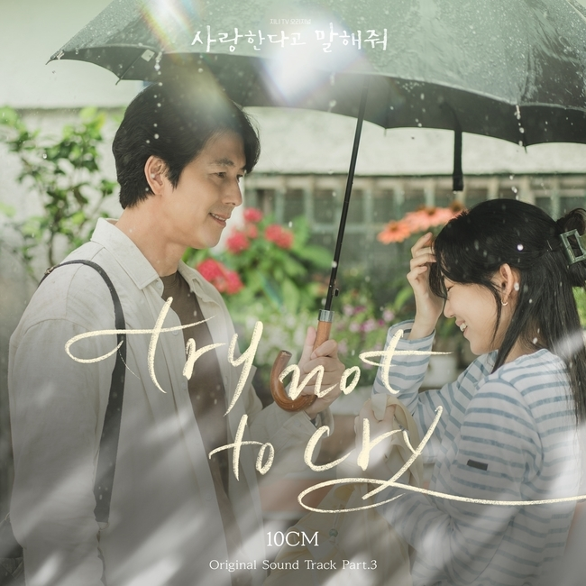

안녕하세요 라보엠입니다.
ENA 의 월화 드라마 사랑한다고 말해줘를 열심히 보고 있습니다. 이 글을 작성하는 지금도 TV에서 10화가 방영중입니다. 손으로 말하는 차진우(정우성)와 마음으로 듣는 배우 정모은(신현빈)의 소리 없는 사랑을 다룬 슬로우 멜로 드라마로, 배우들의 마음이 들리는듯한 기분이 드는 정말 잘 만든 드라마라고 생각합니다. 좋은 작품에는 좋은 음악이 따라오기 마련이죠, 이 드라마의 OST 중 10cm가 부른 Try not to cry 를 소개해드리겠습니다.
Try not to cry 10cm - 사랑한다고 말해줘 OST
Release Note
2023. 12. 12. #사랑한다고말해줘 #10CM #try_not_to_cry
[사랑한다고 말해줘 (Tell Me That You Love Me) OST Part 3] 10CM - try not to cry MV
[사랑한다고 말해줘 OST Part 3]
10CM - try not to cry
손으로 말하는 화가 차진우(정우성 분)와 마음으로 듣는 배우 정모은(신현빈 분)의 소리없는 사랑을 다룬 클래식 멜로 드라마 사랑한다고 말해줘. OST 강자 10CM가 드라마 사랑한다고 말해줘의 OST 세 번째 주자로 출격한다.
try not to cry는 섬세한 감성의 노랫말로 등장인물들이 지닌 저마다의 상처와 외로움을 대변하는 곡이다.
절제된 악기 구성 속에 담백하면서도 쓸쓸함이 느껴지는 10CM의 음색이 돋보인다.
특히, 담담히 말하듯 흘러가는 보컬이 곡의 후반부에 이르러 눌러 왔던 진심을 토해 내듯 터져 나오며 진한 여운을 선사한다.
이번 OST 프로듀싱에는 사랑의 불시착, 그 해 우리는 등 다양한 작품의 OST에서 최고의 시너지를 발휘한 남혜승 음악감독과 김경희 작곡가가 참여, 완성도 높은 음악의 탄생을 알린다.
[Credit]
Lyrics by 남혜승, 김경희
Composed by 남혜승, 김경희
Arranged by 남혜승, 김경희
Programming by 남혜승
Guitar by 김경희
Vocal Directed by 김기원
Vocal Recording by 온성윤 @ CSMUSIC& Studios.
Session Recording by 남혜승, 김경희 @ SORI NARLY(소리날리)
Mixed by 이건호 @ Team N Genius
Mastered by 권남우 @ 821 Sound Mastering
Try not to cry 10cm - 가사
Sitting on edge of water
Watching the sun goes down
Hearing the light sing
Slowly fading away
알 수 없는 외로움이
내 어깨에 내릴 때
방황하던 마음과
고민들이 발을 내딛고
When my eyes are closed
My tears have dried
Everything sleeps
Where have I been going?
Will I ever come around?
때론 돌아오지 않을
강물처럼 흘러
Why have I been here?
Was it all just a dream?
애써 소리내어 봐도
고요함만이 나를 안아주네
언젠가 알 수 있을까
쉼없이 걸어가는
나의 이유와
이 길의 끝에 놓인 마음들
When I get so tired
Of being alone
Everything sleeps
Where have I been going?
Will I ever come around?
때론 돌아오지 않을
강물처럼 흘러
Why have I been here?
Was it all just a dream?
애써 소리내어 봐도
고요함만이
Whеn silence's so deep
When I'm on my own
I'm hеaring the dark
If there's an answer
Can I be the one that somebody wants to know?
When silence's so deep
When I'm on my own
I'm asking my self
Try not to cry
Can I be the one that somebody wants to be?
Hearing the light sing

사랑한다고 말해줘 간단 후기
정모은은 제주도에 촬영하러 갔다가 우연히 차진우와 만나고, 불이 난 카페에서 정모은이 차진우를 구하기도 하는 등, 여러번 동선이 겹친 그들은 서울에서도 다시 만나게 되며 인연을 이어갑니다. 어릴적 열병으로 인해 듣지 못하게 된 차진우에게 세상의 벽은 높았고, 정모은에게도 어느정도의 벽을 두지만, 마음으로 대하는 정모은에게 차차 마음을 열며 두 사람은 서로에게 스며들게 됩니다. 한편, 대학시절 차진우와 함께 했던 송서경이 차진우가 아이들을 가르치는 미술관의 관장으로 오며 이들의 관계는 복잡해집니다.
이제 10화로 중반인데, 청각장애인인 차진우를 편견 없이 대하는 모습이나, (남자 얼굴이 정우성이라 그럴지도..) 비행 승무원을 그만 두고 배우라는 힘든 직업에 뒤늦게 뛰어든 정모은을 계속 응원하게 됩니다. 연극무대에 펑크가 나서 정모은이 대신 출연하게 되었을 때, 차진우가 객석에 앉아 말이 아닌 손으로 응원하는데, 드라마를 보는 모든 사람의 마음이 같지 않았을까 싶습니다. 이제 마지막 16화까지 3주가 남아 있는데 차진우와 정모은이 서로의 관계를 잘 지켜낼지, 아니면 어린 시절 서로 함께 했던, 차진우와 송서경, 정모은과 윤조한이 이루어지게 될지 결말이 무척 궁금해집니다. 저는 물론 차진우와 정모은이 잘 만나며 끝나길 바랍니다. ^^ 모든 것이 빠르게 지나가는 현대사회에서 요즘 같지 않은 드라마 사랑한다고 말해줘 추천드립니다.